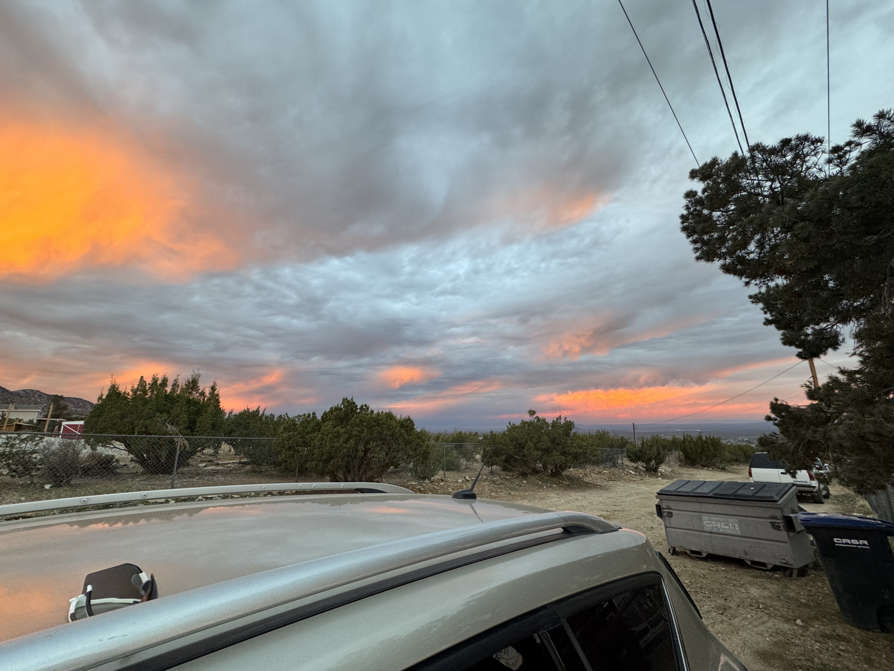
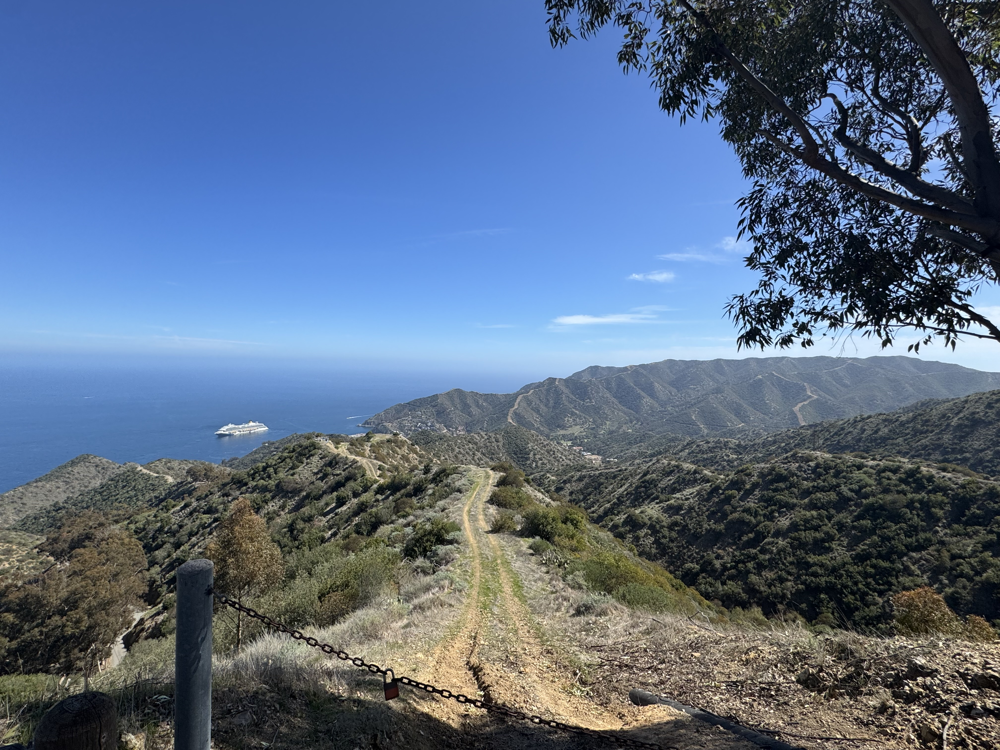

Hello my name is Kamaal Eredia i am a Hisotry major at the University of California, Riverside,
I have chosen the major of History for two main reasons, one becuase i genuiely really like hisotry and it has always
interested me and secondly I am currently doing Army ROTC to hopefully if evrything works to be an officer in the US
Army and to do that you only need a bachelors dergee so i decieded to go with a major that i liked.
When it comes to trying to put down my professional expericne it may be viewed as not much given that i am still a college
student but i hvae had a job of a cook at the Yaamava Resort and Casino for more than two years now, wehre i cook and
prepare food for guests and customers somtimes interact and help customers when front of house staff are busy or preoccupied,
most of my professional work experince consists of things within the food industry and not much outsdide of that but i can say
that being in the food industry teaches alot of important things such as being able to handle high stress envivroments as well
as being able to handle trying to do multiple tasks at a single time which can be seen as a very usefull skill to many people
in the day and age. Also being in gorups and organizations has helped with the ability to work in a team, and working in a team
to acchieve a good and satifying result not only for the indavidual but for the whole team as well.
Being in college also gives some attributes to a person that can be seen as usefull such as baing able to keep and adhere to
specific deadline and ensuring the work and material is almsot always turned in and submitted at the designated time, as well
as being able to somewhat teach a good sense of time management, which can help oriente tasks and order them in detials of
time and importance as well as time needed to completere certain tasks which can help with planning ahead. Being able to plan
ahead is very valuable skill in this day an age as it can help asisst someone in their work and or life and helping prepare
for things that ether havent happened yet or not happen for awhie, which is why its a valauable skill as it can make a person
in the workplace much more productive by getting certian parts of a task done quicker making future projects much easier
and faster becuse there will be less work to do, this aslo has more beniifts or reducuing stress and the chnaces of an
increased prductivity are very possibel when there are lesser amounts fo stress in ones life and work enviroment.

